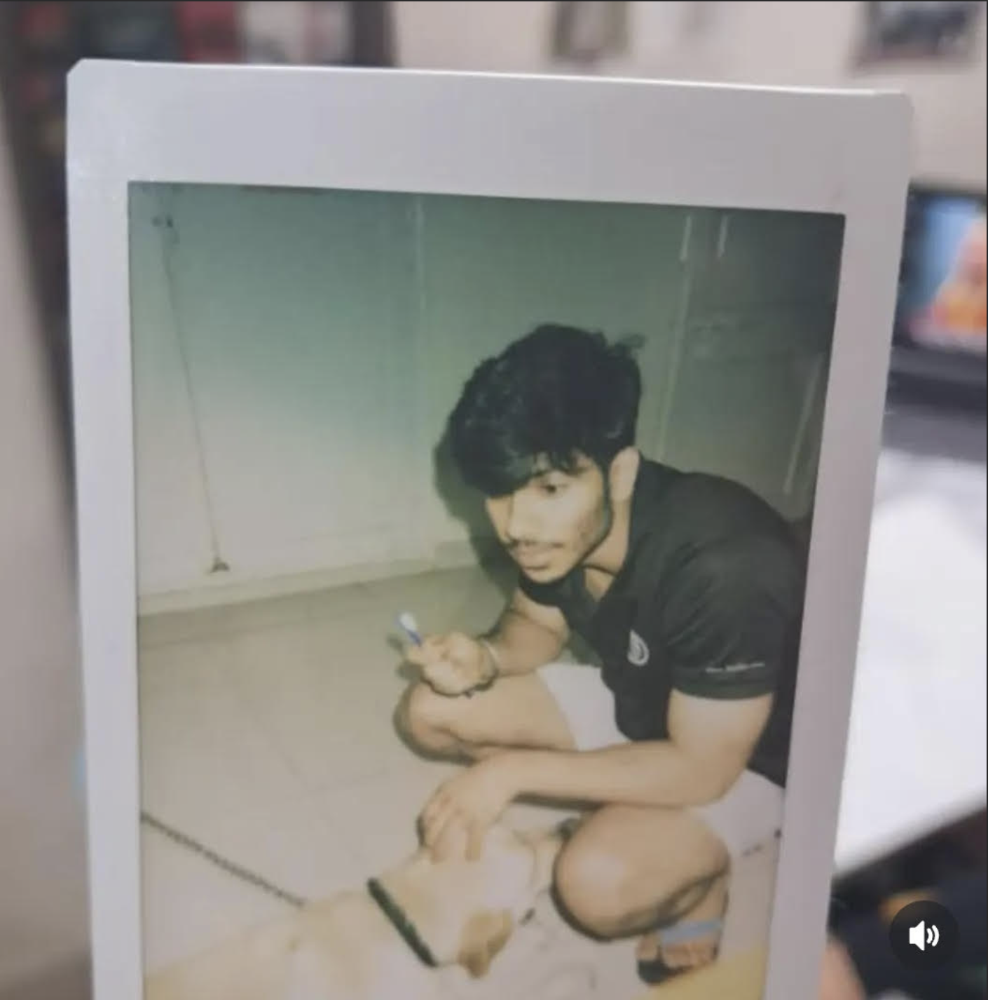

Sumedh Singh Virk

Resume Summary:
Motivated first-year Artificial Intelligence and Machine Learning engineering student with a strong foundation in mathematics, programming, and problem-solving.
Skilled in Python, C, and web development, with academic excellence demonstrated by a 9.55 CGPA and top scores in Engineering Mathematics.
Currently building personal projects, including this portfolio website, and eager to apply technical skills in practical and collaborative environments.
Education:
- BMS College of Engineering, Bengaluru - B.E. in Artificial Intelligence and Machine Learning (2024-28)
CGPA - 9.55 (present)
- CBSE Class XII (2023-24) - 95.2%
- CBSE Class X (2021-22) - 90.6%
Skills:
- Programming - Python, C, SQL
- Web Development - HTML
- Mathematics and Problem Solving - Linear Algebra, Calculus, Differential Equations, Modular Arithmetic
Work Experience:
Yet to gain
Awards and Accomplishments:
- Ramanujan Bose IIT Alumini Olympiad Topper
- Top 1.5% in CBSE Class XII Examinations (95.2%)
- School Captain - Led more than 2000 students, organised events and activities
Hobbies
Contact Me